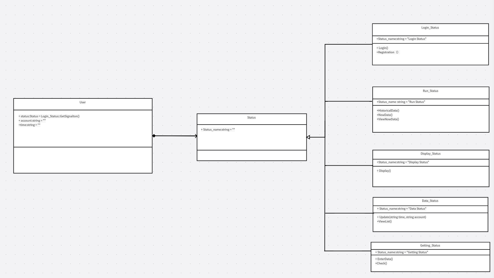

Revision History:
| Date | Author | Description |
|---|---|---|
| Mar 24 | Yang, Zhu | First version |
[toc]
The document is intended to help the customer understand the system design, and serves as the basis of task division and inter-module communication, providing design information for developers and testers.
The document is organized as follows:

version 1.0
UserAttributestatus:class Status
accounnt:string
time:string
Operation
Records user information and relies on the status class for its specific operations
StatusAttributeStatus_name:string
Operation
Evoked by the user and realized through class inheritance to show state transitions when used by the user
Login_StatusAttributeStatus_name:string=Login_Statue
OperationLogin()
Registration()
Provides two functions, login and registration, which are selected by the user in the login screen, if not previously registered, the registration function is carried out, otherwise the login is carried out and the appropriate information for a particular customer is loaded
Run_StatusAttributeStatus_name:string=Run_Status
OperationHistoricalData()
NewData()
ViewNewData()
Three functions are provided, the first function is to extract historical information, the second function is to record the data recorded by the sensor and save it, and the third function is to view the latest recorded data.
Display_StatusAttributeStatus_name:string=Display_Status
OperationDisplay()
Demonstration function, data processing and then presented in the form of animation in the software.
Data_StatusAttributeStatus_name:string=Data_Status
OperationUpdate(string time,string account)
ViewList()
Update operation: Select and update the corresponding data for the corresponding timestamp of the corresponding user by passing in the timestamp and account id. View List Operation: View the corresponding data after the previous update operation.
Getting_StatusAttributeStatus_name:string=Getting_Status
OperationEnterData()
check()
EnterData operation: Collect data.This status operation is evoked by the newdata operation of the run status check operation: check whether the data is legal or not